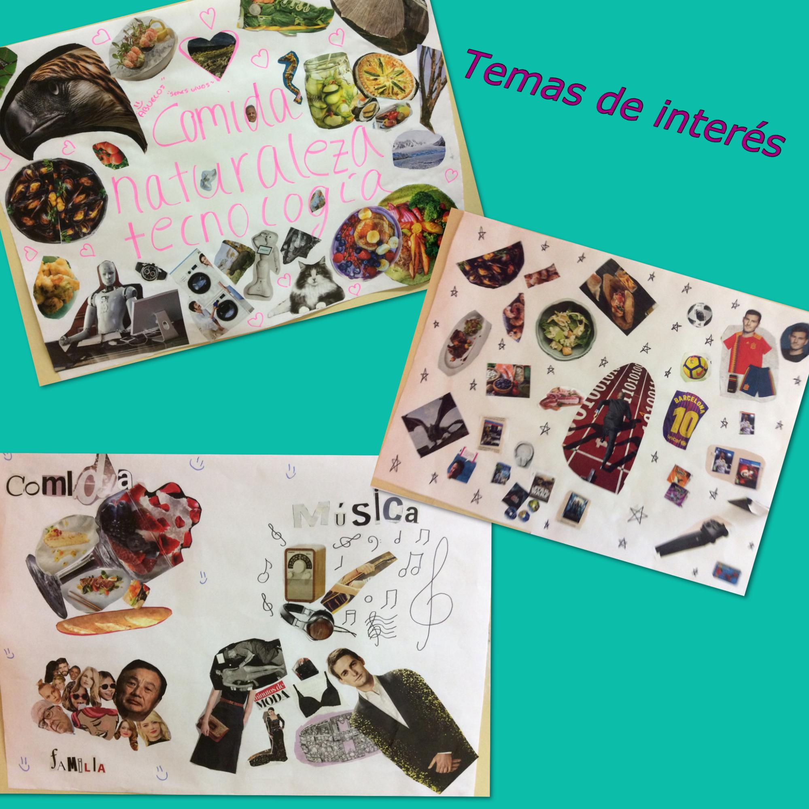
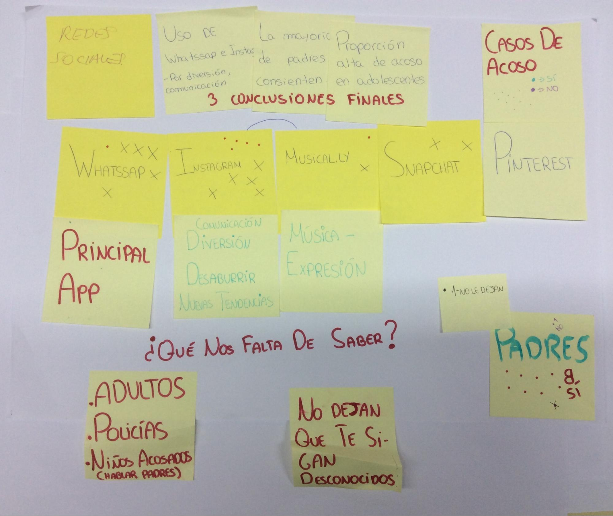
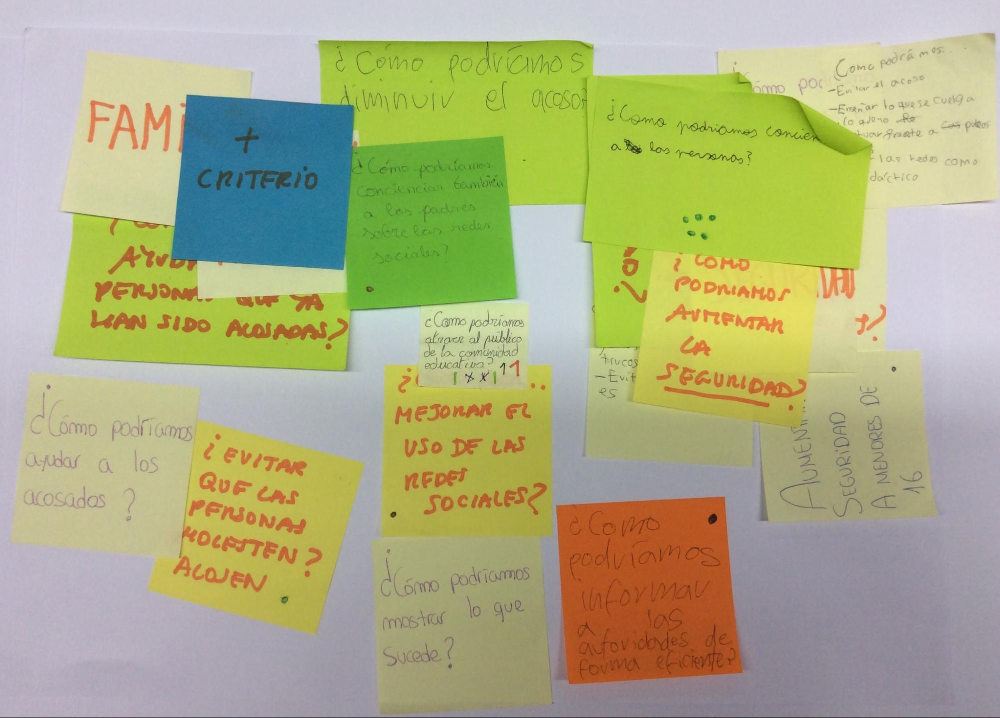
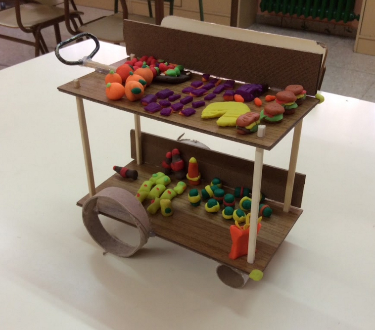

3- Proyecto de Design Thinking y participación
Taller participativo del alumnado en el entorno de la comunidad educativa
Tiempo estimado: 8-12 sesiones de 50 minutos más trabajo preparatorio en casa o en el aula.
ESO y Bachillerato
Equipos de 4-6 integrantes + 1 facilitador
Durante el proyecto se puede intercalar pequeñas experiencias de 50 minutos en las que trabajar cuestiones que van a ser clave a la hora de desarrollar el proyecto: potenciación del trabajo en equipo como la dinámica de Torre de Spaguettis o el reto del Malvavisco (dinámica de los spaguettis) , potenciación de la creatividad (dinámicas para desarrollar tu ingenio), técnicas para mejorar la representación visual, la comunicación escrita y oral (dinámicas para construir un story telling , hacer cómics, collages, imaginar cuentos relatados entre las personas integrantes del equipo, etc.),
Es importante contar con una buen planing, definir las sesiones, fechas, horarios, profesorado responsable, distribuir responsabilidades, roles, etc. y marcar un objetivo claro.
NOTA: Es importante que el alumnado esté presente en la génesis del proyecto, que este se prepararse respondiendo, al menos, a un nivel 5 de participación (según la escalera de participación de Roger Hart): Consultados e informados. Proyecto que ha sido creado y dirigido por adultos, pero se ha involucrado activamente a los niños y jóvenes, y han sido consultados y tomados en cuenta; o a un nivel 6: Iniciado por un adulto, con decisiones compartidas con las niñas y los niños. Se toman decisiones conjuntas entre los adultos y los niños, en una relación de igualdad.
Equipo:
Al tratarse de una actividad más larga, invertimos parte de la primera sesión en que todas las personas que van a participar se presenten.
Para eso podemos utilizar una dinámica muy sencilla, pero muy interesante: Tu objeto favorito . Consiste en que cada persona (alumnado, docente, facilitador) se presente con su objeto favorito y explique porqué es importante para él o para ella.
Antes de comenzar:
Cuando el proyecto surge de la iniciativa del alumnado, existe una fase previa en el que se hace una búsqueda de temas de interés.

Puede hacerse mediante la realización de un collage por grupo o con una lluvia de temas, incluso con una lluvia de temas basada en escenarios o contextos (imágenes relacionadas con el centro, con el contexto más cercano, etc.) como en One day in a life
Aprovecharemos, mediante estas dinámicas previas, como la realización de un collage, para entrenar la creatividad y el trabajo en equipo antes de comenzar el proyecto.
En los proyectos es importante potenciar la idea de equipo.
1- Investigar (divergente):
Es más exhaustiva que en el caso de los talleres, de hecho el alumnado realiza una planificación de la misma.
Conlleva la utilización de varias herramientas y un análisis de la información más profundo y detallado. Se sale a la calle, se intenta que los equipos conozcan a personas clave para su diseño, se entrevisten con ellas, las observen…
Llegar a la co-creación sería muy buena noticia.
Estos son los pasos que seguimos en la fase de investigación en un proyecto de Design Thinking y participación en el aula:
1- Detectamos los actores del proyecto. Eso lo representamos mediante un Mapa de actores, (ENLACE PRESENTACIÓN 1 BLOQUE 4 , un esquema que puede tener una estructura basada en círculos concéntricos (dentro los protagonistas, más alejados los que no son usuarios directos pero participan de una u otra forma, etc.)
2- Hacemos un plan de investigación. ¿Qué sabemos ya del tema? ¿Qué nos queda por saber? Cómo vamos a conseguir la información?
Ficha plan de investigación

Si no tenemos a mano la ficha de investigación o queremos seguir utilizando notas adhesivas con la información obtenida en las entrevistas, podemos hacer una síntesis más espontánea, a modo de panel resumen en el que podemos ver unas conclusiones y una serie de datos que aún nos faltan por saber para dar por finalizada la investigación.
Durante el proceso seguiremos integrando información relevante.
3- Nos comunicamos con los distintos tipos de usuarios.
Entrevistas
Hacemos entrevistas y ponemos en común lo que nos han dicho las personas involucradas.
4- Elaboramos conclusiones de todo ello.
Ficha conclusiones investigación
Utilizamos una ficha para ordenar todo lo que hemos averiguado y priorizar aquellas cuestiones que nos parecen más relevantes.
5- Podemos llegar a elaborar alguna herramienta de síntesis:
Después de haber realizado la investigación podemos sintetizar lo aprendido sobre las personas usuarias.
Herramienta Método persona.

Reducimos todos los usuarios a unos pocos arquetipos de personas que los representan.
Los arquetipos representan lo que hemos visto que se repite en un número de personas que pertenecen a un tipo de usuario.
Journey map o mapa de la experiencia del usuario .
Si estamos re-diseñando una experiencia o un servicio, es muy conveniente utilizar esta herramienta para visualizar la experiencia o el servicio como un proceso.
Para hacer un mapa de experiencia de usuario necesitamos tener información relevante de las personas usuarias para saber qué momentos del proceso son momentos agradables para el usuario, qué momentos le producen tensión, etc.
A raíz de elaborar el mapa de experiencia de usuario sabremos dónde hacer énfasis para mejorar el proceso. Por ejemplo: hay que hacer mucha cola para sacar el libro, el tiempo de uso de la biblioteca es muy corto, en el recreo no hablo con nadie…
Al final de la fase de investigación comenzamos a enfocar, a concluir, pero al mismo tiempo volvemos abrir el foco para detectar distintos retos.
2- Enfocar (convergente):
1- Hacemos una lluvia de retos, con base a las conclusiones que hemos elaborado a raíz de realizar las herramientas de síntesis; clasificamos y elegimos un reto sobre el que trabajar.
La lluvia de retos se puede hacer utilizando notas adhesivas (una nota un reto) o haciendo un listado en un A3 o en un papel grande que podamos pegar en la pared para visualizar todos los caminos y seleccionar uno.
2- Definición del reto: Una vez hemos seleccionado un reto, podemos profundizar en el completando la ficha del reto.
Ficha reto
Otra alternativa a la ficha “reto” es escribir la pregunta que queremos contestar en grande para que esté visible durante todo el proyecto. Para eso podemos utilizar otra ficha de reto más sencilla, que llamamos ¿Cómo podríamos…?
En este momento del proyecto podemos hacer énfasis en la idea de que los proyectos se pueden ir transformando, se pueden ir construyendo, de modo que el reto puede ir cambiando si hacemos nuevos descubrimientos a lo largo del proceso.
3- Idear (divergente)
Ahora, que entendemos a las personas usuarias y hemos identificado un reto, es cuando podemos desplegar todo nuestro ingenio.

Hay numerosas técnicas de creatividad. La más conocida es la lluvia de ideas o brainstorming, pero hay más, muy interesantes, incluso podemos crear nuestras propias técnicas.
En un proyecto esta fase es mucho más potente que en un taller. Se suele utilizar la técnica de la flor de loto, para llegar a más ideas y a profundizar en cada una de ellas mediante la creación de diferentes alternativas.
4- Prototipar y testar
Durante un proyecto se construye más de un prototipo.
En el caso en el que diseñamos una experiencia o un servicio intentamos prototipar los puntos de contacto principales mediante la definición de distintos artefactos o soportes que representan: una web, una aplicación móvil, un folleto, cartelería, un carnet, objetos de merchandising, protocolos, conversaciones, presentaciones… todo aquello que necesitamos definir para construir e implementar la idea.

Los prototipos se testan con usuarios finales, no solo con compañeros.
Se intenta involucrar a los actores principales durante el proceso, no solo para validar las ideas.
Es importante saber lo que las personas usuarias piensan de nuestra idea; es fundamental que puedan probar el prototipo, lo utilicen e interactúen con el.
Si no recogemos sus sugerencias y opiniones no podemos mejorar el prototipo. Para ello utilizamos un panel muy sencillo en el que vamos visualizando la opinión de las personas usuarias. Es el Panel de “me gusta”, “mejoraría”
Podemos testear el prototipo primero con compañeros que no la conozcan Testeo con compañeros y compañeras :
Presentación:
Durante el proceso los equipos hacen al menos dos presentaciones: la presentación de concepto y la presentación de prototipos.
La primera puede ser para presentar el reto.
Es importante que los docentes responsables respalden los retos. Para eso deben tener el visto bueno de dirección, cuyo rol es clarificar las especificaciones, restricciones, etc., que existen para poner en marcha las ideas y que se puedan implementar.
No se trata de poner trabas, sino de clarificar las normas o reglas por las que se rige la comunidad educativa, con el fin de conseguir llevar a la práctica los proyectos.
La segunda presentación es la de los conceptos (después de la fase de ideación)
La tercera es la de los prototipos ya testados.
Para cada una de las presentaciones, los equipos preparan el material necesario para transmitir sus ideas, argumentos, descubrimientos, etc.
Después de cada presentación se debe de re-orientar el proyecto con las sugerencias, o aportaciones de todas las personas involucradas.
Implementación:
Si estamos definiendo un producto necesitaremos hacer planos de dimensiones generales, pruebas, testeo; hasta llegar a definir las medidas, tamaños, colores y texturas del producto; realizando archivos informáticos que nos sirvan para su fabricación, con impresora 3D, por ejemplo..
Si estamos definiendo una experiencia llegaremos a realizar prototipos finales, terminaremos por darles forma, construiremos los puntos de contacto definitivos y un blueprint en el que tendremos en cuenta los procesos de apoyo necesarios para soportar el servicio.
Muchas veces implementar nuestra idea pasa por buscar aliados, instituciones y organizaciones, que trabajen en temas afines y quieran estar interesadas en nuestro proyecto. También es importante la involucración del centro para ayudar a hacer viables las ideas.
En algunos casos, si la dedicación en tiempo es grande (algunos proyectos pueden ser de un curso entero) podemos llegar a implementar totalmente nuestra idea.
Es importante saber esto de antemano. No es buena política generar falsas expectativas en el alumnado. El docente debe ser claro. ¿Se trata solo de una experiencia o queremos llevar a cabo las ideas que surjan del trabajo?
Normalmente el alumnado, en el caso de los proyectos, quiere llegar hasta el final y ver como coge forma la idea fruto de su trabajo y se convierte en una alternativa real. Cuando estamos trabajando en el diseño de servicios que se puedan prestarse en el centro educativo y puedan contar con el liderazgo del alumnado y el apoyo del profesorado, este escenario puede darse.
Trabajar para que se dé es importante, ya que potenciamos la participación real y ayudamos a que el alumnado se atreva a ser proactivo. Es interesante ofrecerles un cauce para que puedan desarrollar sus ideas.

Design Thinking en educación por Elena Bernia bajo licencia Creative Commons Reconocimiento-NoComercial-CompartirIgual 4.0 Internacional License.